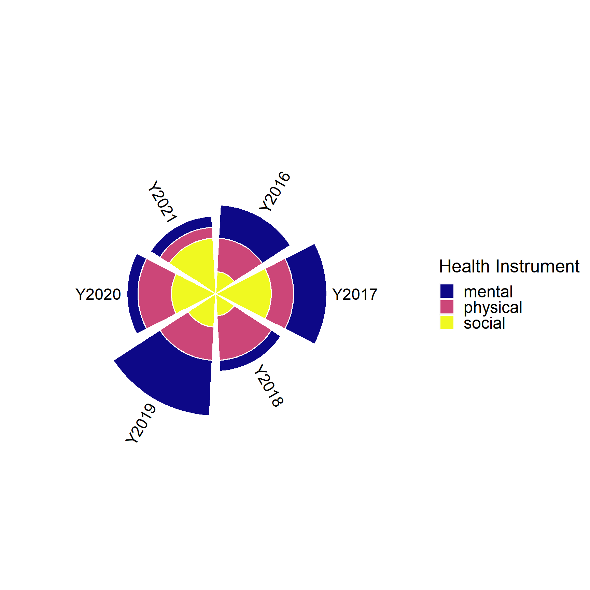

library(tidyverse)
library(DT)
set.seed(123)
dat <- tibble(
Year = paste0("Y",rep(2016:2021, each=3)),
Instrument = rep(c("physical","mental","social"),6),
Score = sample(1:5, size = 3*6, replace = T))
dat %>% datatable(
rownames = FALSE,
options = list(
columnDefs = list(list(className = 'dt-center',
targets = 0:2))))Creating static and interactive Nightingale rose diagram
R
Data Visualization
statistical consulting
Creating static and interactive Nightingale rose diagram using ggplot and plotly in R
1. Creating Nightingale rose diagram using ggplot (static figure)
This plot is also called Wind Rose and Coxcomb diagram.
This diagram was developed by Florence Nightingale (1820-1910), a statistician, nurse and social reformer who was the foundational philosopher of modern nursing.
For demonstration purpose, I will simulate a simple data inspired by the example figure.
Suppose we have three variables in our data
- Year: 2016 to 2021
- Instruments of health: physical, mental and social
- my self-reported measure of health by instruments: a score between 1 and 5, where 5 represents the highest level of self-reported health
we plot year as our rays (or rose petals) and instruments as stacked bars with height representing the scores.
Adding labels on top of each ray. This step requires we position the label using angle degrees.
library(viridis)
p <- ggplot(dat) +
# Add the stacked bar
geom_bar(aes(x=Year, y=Score, fill=Instrument), stat="identity", size=0.6, color="white") +
scale_fill_viridis(discrete=TRUE, direction = 1, option = "C", name="Health Instrument") +
ylim(0,15) + #using -1 as the lower bound to leave space in the centre of the polar
coord_polar() +
theme(
panel.background = element_rect(fill = "white", colour = "white"),
panel.grid.major = element_blank(),
panel.grid.minor = element_blank(),
panel.border = element_blank(),
axis.line = element_blank(),
axis.ticks = element_blank(),
legend.position = "right",
legend.text = element_text(size=18), #large font for website display
legend.title = element_text(size=20), #large font for website display
axis.text = element_blank(),
axis.title = element_blank())
# Add labels on top of each bar
label_data <- dat %>% group_by(Year) %>% summarize(Tot=sum(Score))
angle= round(90 - 360 * (c(1:nrow(label_data))-0.5) /nrow(label_data),0) # I substract 0.5 because the letter must have the angle of the centre of the bars. Not extreme right(1) or extreme left (0)
label_data$hjust<-ifelse(angle < -90, 1, 0)
label_data$angle<-ifelse(angle < -90, angle+180, angle)
p + geom_text(data=label_data, aes(x=Year, y=Tot+0.5, label=Year, hjust=hjust),
color="black", size=6, angle= label_data$angle, inherit.aes = FALSE)
2. Creating interactive Nightingale rose diagram using plotly
In Plotly, r means radius and theta means angle. To specify categorical angle labels and ticks, we need to input character variable.
Because we specified theta to be categorical (representing variable Year), we need to define even breaks between 0 to 360 by the number of unique Years (6 years in this example) to place the angle labels.
- This is controlled by setting
period = 6under the layout option of polar.
- This is controlled by setting
The interactive feature of plotly is super nice! You can try scaling and rotating the plot!
library(plotly)
fig <- plot_ly() %>%
add_trace(
data = dat,
r = ~Score, #radius
theta = ~Year, #angle
type="barpolar",
color = ~Instrument,
hovertemplate = paste('Score: %{r}',
'<br>Year: %{theta}<br>')) %>%
layout(
legend=list(title=list(text='Health Instrument')),
polar = list(angularaxis = list(
rotation = 90,
direction = 'clockwise', #position the polar diagram
period = 6)), #evenly distribute angles to host categorical var;
margin = 0.01)
figR session information
R version 4.1.3 (2022-03-10)
Platform: x86_64-w64-mingw32/x64 (64-bit)
Running under: Windows 10 x64 (build 19044)
Matrix products:
locale:
[1] LC_COLLATE=English_Canada.1252 LC_CTYPE=English_Canada.1252
[3] LC_MONETARY=English_Canada.1252 LC_NUMERIC=C
[5] LC_TIME=English_Canada.1252
attached base packages:
[1] stats graphics grDevices utils datasets methods base
other attached packages:
[1] plotly_4.10.0 viridis_0.6.2 viridisLite_0.4.0 DT_0.22
[5] forcats_0.5.1 stringr_1.4.0 dplyr_1.0.8 purrr_0.3.4
[9] readr_2.1.2 tidyr_1.2.0 tibble_3.1.6 ggplot2_3.3.5
[13] tidyverse_1.3.1